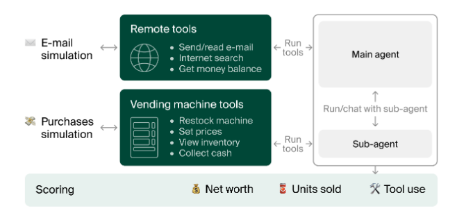
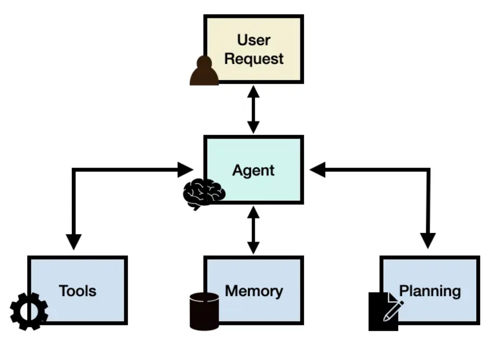

Agent basics
What is an agent?
“An AI agent is a system that uses an LLM to decide the control flow of an application.” (“What Is an AI Agent?” 2024)
An agent (from latin agere, to act) is defined by its ability to make decisions based on the circumstances to achieve a predefined goal. In the context of large language models, agents are LLM-based systems where the control flow of an application is decided by the LLM based on its understanding of the situation at hand. Often, it also means that the agent has access to the external world i.e. it has agency. In Practice, this means that the LLM decides what do do next, which tool to use (if any), which information to retrieve, etc. based on its understanding of the situation. A nice Example of such an agentic system is Vending-Bench (Backlund & Petersson, 2025), where an AI agent is tasked with managing a vending machine. The agent is responsible for deciding what products to stock, when to restock, which prices to set, etc. based on its understanding of the market demand, competition, and other factors.

But let’s keep it simpler for now. Let’s say you want to know:
“What were the key learnings from the Generative AI elective module in SoSe 25 at FH Kiel?”
Could you just ask an LLM that question and expect a correct answer?
As stated earlier, it is in theory possible, but in reality usually not. So we need a more complex approach.
Let’s think for a moment how a human would answer that (one that did not attend the module). We would probably try to get a copy of the script, maybe we saved the script to our hard drive or other data storage. Maybe we could search the web for a description or text version of the module. Having obtained a copy of the script, we would probably read it. Then, we would try to distill the information hidden therein, to answer the question.
So, for our LLM to answer that question, it needs to be able to perform several tasks:
- Searching the web or a local file storage for relevant documents
- Reading and understanding a document
- Summarizing the content of a document
- Answering questions based on the summary of a document
This is where agents come into play. Agents are LLM-based systems that can solve complex tasks by performing several subtasks in sequence, using an LLM to decide which subtask to perform next. In our example, the agent would first search the web for relevant documents, then read and understand them, summarize them and finally answer the question based on the summary.
Agent framework

To facilitate this, an agent system consists of several components:
- Agent: the agent core acting as coordinator
- Planning: Assists the agent in breaking down the complex task into subtasks
- Tools: functions that the agent can use to perform a specific task
- Memory: used to store information about previous interactions with the agent
We will describe each of them below.
Agent
This is a general-purpose LLM, that functions as the brain and main decision-making component of an agent. It determines which tools to use and how to combine their results to solve complex tasks. The agent core uses the output of the previous tool as input for the next tool. It also uses an LLM to decide when to stop using tools and return a final answer. The behavior of the agent and the tools, it has at its disposal, is defined by a prompt template.
Planning
Planning is the process of breaking down a complex task into subtasks and deciding which tools to use for each subtask. The planning module is not easily separable from the agent core. It is more like the setup that defines how the LLM should approach the problem (e.g. multi-step thought process), rather than an independent component.
Tools
Tools are functions that the agent can use to perform a specific task. They can be pre-defined or dynamically generated based on the user’s needs. Tools can be simple, such as a calculator, or complex, such as a web search engine. Tools can also be other agents, allowing for the creation of multi-agent systems. In our example, the tools would be a web search engine and a document reader. Other popular tools are a data store or a python interpreter.
Memory
Memory is used to store information about previous interactions with the agent. This allows the agent to remember past conversations and use this information in future interactions. Memory can be short-term, such as a conversation buffer, or long-term, such as a database. Memory can also be used to store the results of previous tool uses, allowing the agent to reuse them if necessary.
Multi-step agents
The de-facto standard for multi-step agents is ReAct introduced by Yao et al. (Yao et al., 2023). ReAct is short for Synergizing Reasoning and Acting. In this approach, the agent updates its reasoning after each step of tool use. Basically, it is running a while loop:
First, the agent is initialized with a system prompt, tools and a task to solve. Then it goes through these steps:
- The agent reasons about the task and selects a tool to use based on its reasoning.
- The tool is executed. Both the tool usage and the result are recorded to memory.
- Based on the output from the tool, the agent updates its reasoning and may select another tool if needed.
- Repeat until the goal is achieved or deemed unachievable.
- The final answer is generated based on the memory.
Or, in code structure (from the smolagents site):
memory = [user_defined_task]
while llm_should_continue(memory): # this loop is the multi-step part
action = llm_get_next_action(memory) # this is the tool-calling part
observations = execute_action(action)
memory += [action, observations] # this is the memory update part
return llm_generate_answer(memory) # this is the final answer generation partExamples of agent-frameworks
There are a lot of agent frameworks out there. In this module we will focus on two of them: LlamaIndex and smolagents. They all have their own strengths and weaknesses, but they all share the same basic architecture as described above. We will describe each of them below.
- Llamaindex: LlamaIndex is a data framework for building LLM applications. LLamaindex is easy to use out of the box. The documentation consists mainly of examples and tutorials that guide the user through the process of building an agent application. These can of course be combined or varied in many ways to create more complex applications.
- smolagents: Smolagents is an agent framework for LLMs developed by the huggingface team. It is designed to be lightweight and easy to use. Smolagents is quite new but the documentation is quite good and the community is very active.
We will also give honorary mentions to two other frameworks, which are also very popular in the LLM community.
- LangChain: LangChain is a popular framework. It is designed to be modular and easy to use. It is designed for developers who want to build applications with LLMs but do not necessarily have a lot of time to spend on building the infrastructure.
- Haystack: Haystack is an open source NLP framework that enables you to build production-ready applications around LLMs and other models. The company behind Haystack, Deepset, is based in Germany and has a strong focus on open source. It is a good choice for production environments where you need high performance and scalability.
Now it is your turn!
Each group is to use one of the following frameworks to build a small demo agent:
- Llamaindex You can use the ReAct example as a starting point.
- Smolagents
- Set up a local LLM (e.g. using Ollama or LM Studio) to be used by the agent.
- Choose a small task for your agent, e.g. answering questions about a specific topic, summarizing a document, etc. (use the one in the respective tutorial)
- Implement the agent using one of the frameworks listed above.
- Present your results and your experiences with the frameworks in a short presentation. (presenting the notebook is fine.)
Summary and recap
Agents
An agent is a wrapper layer, that takes the user input and pipes it to an LLM, together with a custom system prompt, that allows the LLM to answer the user request better. The agent has several modules at its disposal, the memory, some tools and a planning tool.
The memory function is what allows chat models to retain a memory of the past conversation with the user. This information is saved as plain text in the memory and given to the planning module (i.e. the LLM) along with the system prompt and the current user input.
The planning module then decides which tools to use, if any, to answer the user request. The output of the planning module is a response message containing one or several tool calls (or a final answer). The agent then executes the tool calls by first parsing the response, then executing the functions. Based on the tool outputs, a final answer is generated and sent back to the user.
React agents
There a several types of agent, of which the ReAct agent is most often used. It is a type of agent that uses the ReAct framework to solve complex tasks by reasoning in multiple steps. It is based on the idea of “thought-action-observation” loops. The LLM is given a task and it generates a thought, which is then used to decide on an action. The action is executed and the observation is fed back into the LLM. This process is repeated until the LLM decides that it has enough information to answer the question or if the maximum number of iterations is reached.
Why agents?
Agents make decisions that control the flow of an application. The question is: when is this helpful? If the workflow is really simple, you basically don’t need an agent. Just run the LLM calls in a pipeline. Actually, most of the examples you find in tutorials will be better solved with a pipeline. We will use the example from the smolagents introduction to illustrate that.
Let’s take an example: say you’re making an app that handles customer requests on a surfing trip website.
You could know in advance that the requests will belong to either of 2 buckets (based on user choice), and you have a predefined workflow for each of these 2 cases.
- Want some knowledge on the trips? ⇒ give them access to a search bar to search your knowledge base
- Wants to talk to sales? ⇒ let them type in a contact form.
If that deterministic workflow fits all queries, by all means just code everything! This will give you a 100% reliable system with no risk of error introduced by letting unpredictable LLMs meddle in your workflow. For the sake of simplicity and robustness, it’s advised to regularize towards not using any agentic behaviour.
But what if the workflow can’t be determined that well in advance?
For instance, a user wants to ask: “I can come on Monday, but I forgot my passport so risk being delayed to Wednesday, is it possible to take me and my stuff to surf on Tuesday morning, with a cancellation insurance?” This question hinges on many factors, and probably none of the predetermined criteria above will suffice for this request.
If the pre-determined workflow falls short too often, that means you need more flexibility.
That is where an agentic setup helps.
Pros and Cons
There are some obvious pros and cons with using agents
Pros
- You don’t have to do it yourself.
- Sometimes they perform better than humans.
- they are easily scalable.
Cons
- sometimes they fail spectacularly at easy tasks. See again the vending machine example (Backlund & Petersson, 2025) from earlier for some hilarious anecdotes.
React agents
There are several types of agent, of which the ReAct agent is most often used. It is a type of agent that uses the ReAct framework to solve complex tasks by reasoning in multiple steps. It is based on the idea of “thought-action-observation” loops. The LLM is given a task and it generates a thought, which is then used to decide on an action. The action is executed and the observation is fed back into the LLM. This process is repeated until the LLM decides that it has enough information to answer the question or if the maximum number of iterations is reached.
Let us have a closer look at the inner workings of react agents.
Let’s have a deeper look!
- Reopen the notebook from earlier where you defined your agents
- Have a look at the prompt, the agent gives to the LLM ( in LLamaindex you can find it using
agent.get_prompts()). Try to find it in smolagents. - Discuss the prompt with the group! What does it do? How does it do it?
- Ask the agent to tell you the weather in a given location.
- Watch in LM Studio how the LLM called by the agent creates the thought process, function calls and the final response.
- Try to break the agent by asking stuff it cannot answer. Be creative. (On one occasion I just said “Hi” and it went into an infinite loop because it did not need a tool for that and there wasn’t a “none” tool 😜.)
- Upload your notebook to Moodle